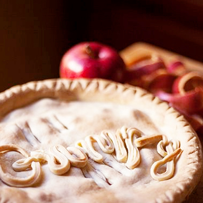

Les ingrédients
-
Pour la pâte:
- 250g de farine
- 50g de sucre glace
- 250g de beurre doux
- 1 pincée de sel
- 7 cuillères à soupe d’eau Pour la garniture:
- 100g de cassonnade
- 1 gousse de vanille
- 3 cuillères à soupe de Maïzena
- 8 grosses pommes
- 1 cuillère à café de Cannelle
- 50g de beurre
La recette
- Ajoute 250g de beurre coupé en morceaux dans un bol, puis la farine, le sel et le sucre glace et mélange le tout. Tu dois obtenir une pâte sableuse.
- Ajoute de l’eau et mélange de nouveau pour obtenir une pâte homogène.
- Divise la pâte en deux parties égales et mets 30 minutes au frais.
- Epluche et retire les pépins des pommes, puis coupe les en dés.
- Mélange les morceaux de pommes avec la cannelle, la cassonade et la vanille dans un saladier.
- Fais fondre le beurre dans une grande casserole et ajoute les pommes. Laisse-les cuire jusqu’à ce qu’elles soient légèrement dorées et ajoute la maïzena. Laisse cuire encore 5 minutes.
- Demande à un adulte d’allumer le four à 180°C.
- Etale une première pâte, l'astuce c'est d'aplatir la pâte entre deux feuilles de papier sulfurisé, puis de passer le rouleau !
- Dépose la première pâte dans un plat à large bord, beurré et fariné. Pique le fond de la tarte et enfourne pour 15 minutes. Pendant ce temps étale la deuxième pâte.
- Une fois la première pâte précuite, ajoute la garniture et recouvre avec la deuxième pâte. Découpe les contours qui dépassent.
- Badigeonne le dessus de la tarte avec un jaune d’œuf et un peu de cassonnade et enfourne pour 40 minutes.